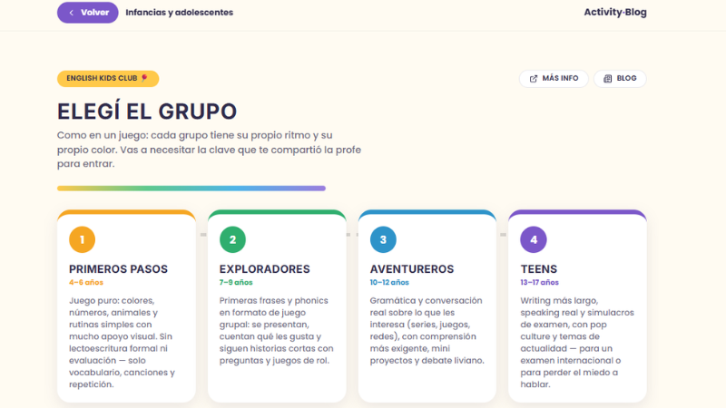

Activity Blog — Campus Web & Lab
Next.js / Speech API / CMSEntorno virtual con panel de gestión docente, tracks por edades y laboratorio de reconocimiento de voz[span_2](start_span)[span_2](end_span)[span_3](start_span)[span_3](end_span)[span_4](start_span)[span_4](end_span). Fomenta la autonomía del estudiante y el registro docente continuo[span_5](start_span)[span_5](end_span)[span_6](start_span)[span_6](end_span).
Explorar Campus ↗